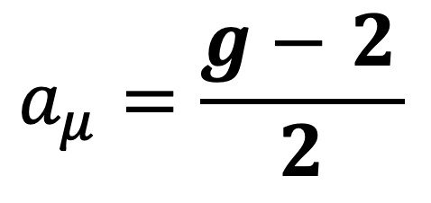
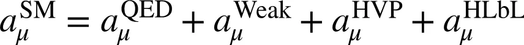
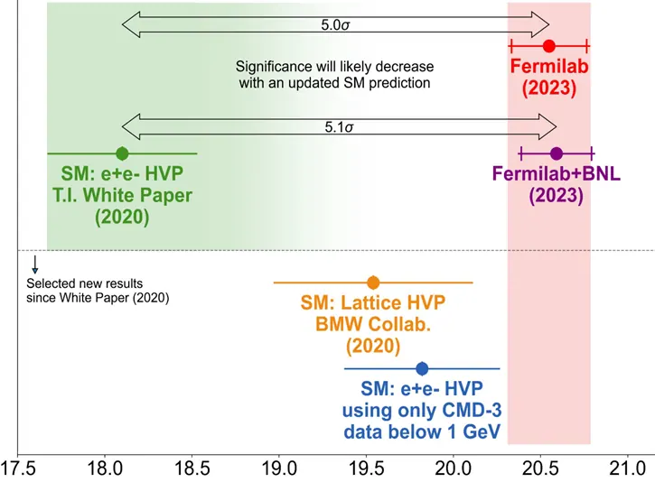
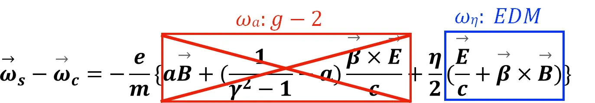
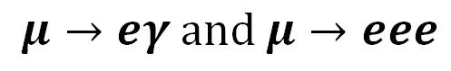

02/07About Muons缪子科普
Fundamental Muon Physics缪子基础物理
Anomalous Magnetic Moment (AMM) of The Muon (Muon g-2)
Magnetic Moment
- A measure of the strength of a magnetic source
- The g-factor is a dimensionless quantity that characterizes the magnetic moment and angular momentum of a particle


- The muon’s spin precesses in the presence of a magnetic field
- The precession frequency is related to its magnetic moment
Anomalous Magnetic Moment


- Deviation from Dirac’s prediction for a free lepton (g=2)
- A contribution of effects of virtual particles, expressed by Feynman diagrams with loops, to the anomalous magnetic moment of muon

- Precision tests of Standard Model calculations and searches for physics beyond the Standard Model


Related experiments: Fermilab muon g-2 experiment E989, J-PARC muon g-2 experiment, Brookhaven experiment E821


Electric Dipole Moment (EDM) of The Muon (Muon EDM)
Electric Dipole Moment


- A measure of the charge distribution within a muon.
- The spin precesses around the direction of the electric field in the presence of a non-zero EDM.
- This precession frequency is related to its electric dipole moment.


- A sensitive probe for studying additional sources of charge-parity symmetry breaking.
- It could shed light on the matter-antimatter asymmetry observed in our universe.
Charged Lepton Flavor Violating (cLFV) Processes
- Evidence of LFV: neutrinos oscillate
- Charged lepton flavor violating processes are highly suppressed in the Standard Model
- A transition between the e, μ, τ sectors that does not conserve lepton family number
- Total lepton number: L = Le + Lμ+ Lτ
- To open a unique window on many New Physics (NP) scenarios
- Related experiments: MEGA experiment, MEG experiment, SINDRUM experiment, SINDRUM II, MEG-II and Mu3e experiments at PSI, Mu2e experiment, COMET/PRISM experiment, DeeMe experiment
Muonic channel: CLFV reactions




References
- A. Keshavarzi, K. S. Khaw, T. Yoshioka, Nuclear Physics B, 975 (2022)
- K. S. Khaw, A. Adelmann et. al, Search for the muon electric dipole moment using frozen-spin technique at PSI, In Proceedings of the 22nd International Workshop on Neutrinos from Accelerators (2022)
- R. H. Bernstein, P. S. Cooper, Charged lepton flavor violation: an experimenter’s guide, Physics Reports, 532, 2 (2013)
- W. J. Marciano, T. Mori, J. M. Roney, Charged lepton flavor violation experiments, Annual Review of Nuclear and Particle Science, 58, 1 (2008)